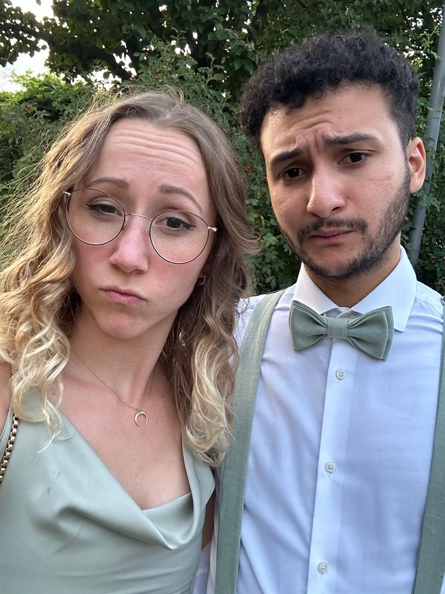
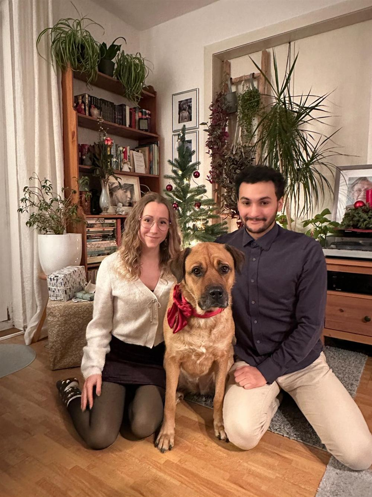
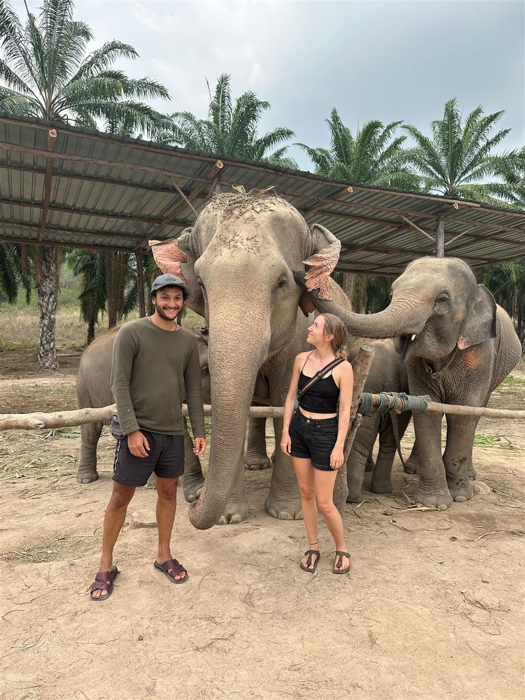
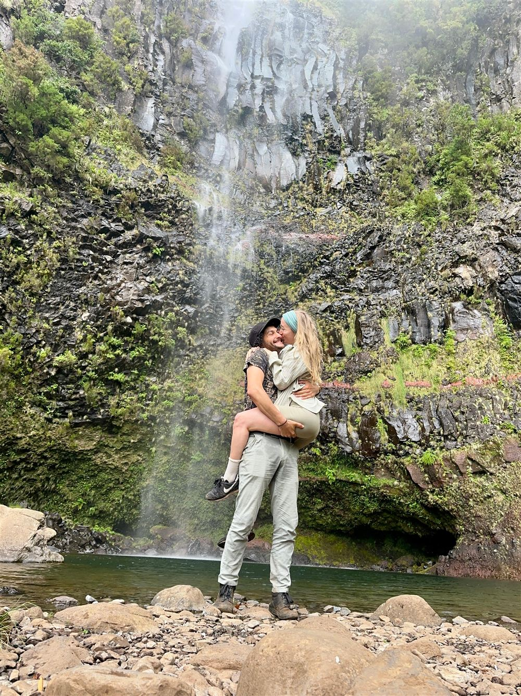
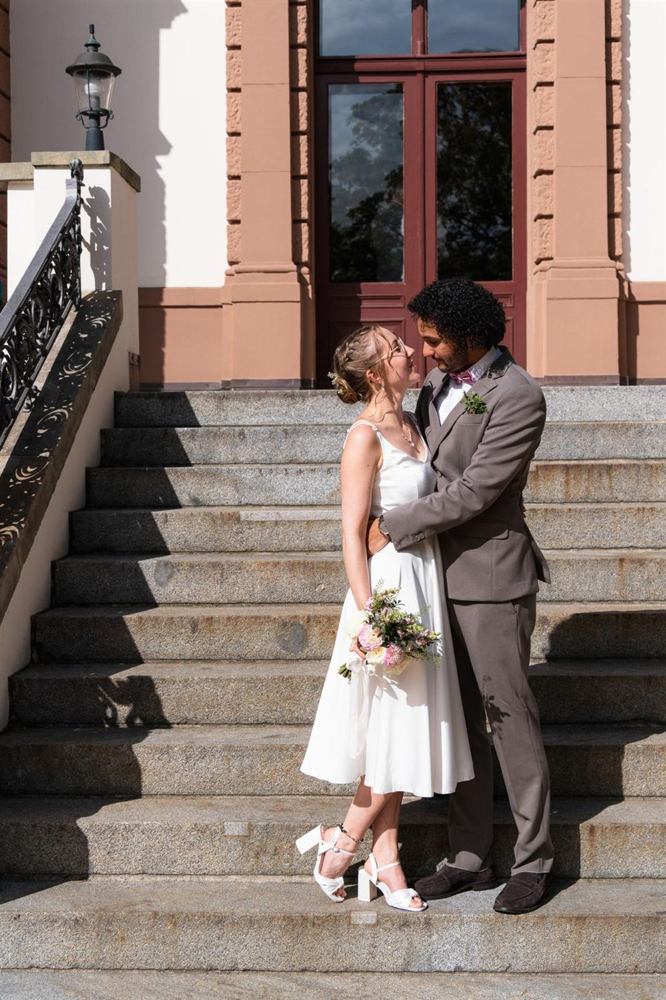

Unsere Geschichte
Vom ersten Urlaub auf Kos zu heute
Scrollen, um weiterzulesen ↓
2023Damals hat niemand gewusst, dass hier mal ein Hund die Gäste durch den Hof führt. Dario hatte den Schlüssel, Malika die Idee.
.jpeg) 2023
2023
Dieses Foto ist das Ergebnis von zehn Versuchen, bei denen der Timer nie gepasst hat. Der elfte war perfekt.

2023Ein Eis, zwei Löffel und die feste Überzeugung, dass man das Stück Schokolade am Ende nicht teilen muss.
 2024
2024
Ein Wochenende, zwei Wanderschuhe und ein Regenschirm, der sich als völlig nutzlos herausgestellt hat.
.jpeg) 2024
2024
Hier wurde zum ersten Mal gemeinsam gekocht. Das Ergebnis war essbar, und das ist ein Erfolg.
.jpeg) 2024
2024
Der Moment, in dem beide gleichzeitig gesagt haben: „Das machen wir jetzt einfach.“ Seitdem gibt es kein Zurück mehr.
 2025
2025
Eine Reise, bei der die Karte zweimal falsch gelesen wurde und trotzdem alle am richtigen Ort angekommen sind.
Ein Picknick mit Blick aufs Wasser, bei dem die Ameisen sich ebenfalls eingeladen fühlten.

2025Dieses Bild entstand, weil jemand dringend ein Foto brauchte und der Rest der Gruppe gerade Kaffee holte.
 2026
2026
Ein Tag, an dem sich alles ein bisschen wie Zuhause angefühlt hat, auch wenn wir gerade erst angekommen waren.

2026Kurz vor dem Foto wurde der Hund angeleint, damit er nicht ins Bild läuft. Das hat nur halb funktioniert.

2026Der letzte Eintrag in dieser Reihe, und gleichzeitig der Anfang von etwas Größerem. Jetzt wird es ernst.